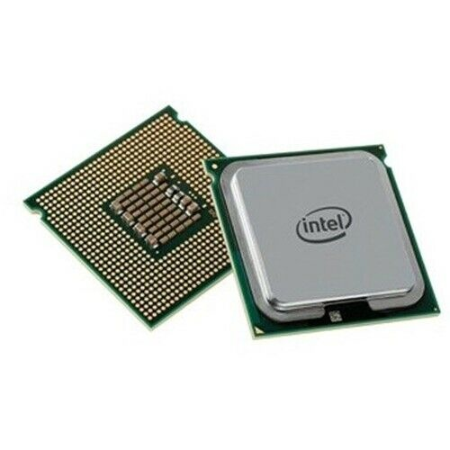
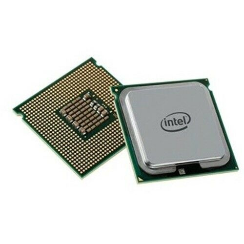

بسم الله الرحمن الرحيم
Bismillahir Rahmanir Rahim
Ans: Actually computer is an electronic device that manipulates information & data. It has the ability to store, retrieve, and process data. Computer can use to create, edit and view documents. Computer can also use to send email, play video game, browse the Web, edit or create video and lots of thing.
 

Ans: Computer hardware is the collection of all the parts of computer which you can physically touch. Example: motherboard, hard disk, ram, processor etc.
Ans: Computer software is the invisible power of computer which helps to operate the hardware. Example: windows 10, microsoft office, google chrome, vlc media player etc.